한 번의 연속 녹화에서 여러 등반 시도의 원시 구간을 보존하고, 촬영 종료 후 개별 클립 후보로 정리합니다.
Solo Product Case Study · Strategy · UX · iOS/Android Engineering · Release
클라이밍 촬영의 반복 작업을,
온디바이스 자동화로 줄였습니다.
TopOut은 연속 촬영 영상에서 등반의 시작과 완등 후보를 자동 추출하고, 검토·정밀 편집·갤러리 저장 확인·재촬영을 하나의 흐름으로 연결한 iOS·Android 앱입니다.
ON-DEVICE AI
영상·관절 데이터 외부 전송 없음
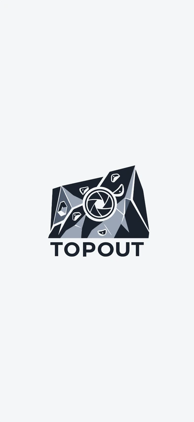
AUTO SEGMENT
시작 · 완등 후보 · 다음 시도 탐지
01 · PRODUCT FILM
약 1분으로 확인하는
TopOut의 핵심 경험
촬영 준비부터 자동 구간 탐지, 결과 검토와 재촬영까지 제품의 전체 사용 흐름을 세로형 프로모션 영상으로 구성했습니다.
1080 × 19209:16 Vertical약 1분
VERTICAL PRODUCT FILM · 1080 × 1920
02 · OVERVIEW
기술을 시연하는 데서 끝내지 않고,
촬영 전 과정을 하나의 제품 흐름으로 설계했습니다
클라이머가 반복적으로 수행하던 녹화 조작, 구간 탐색, 편집, 저장 확인, 재촬영을 하나의 세션으로 연결했습니다. 자동화는 결과를 강제하지 않고, 사용자가 빠르게 검토하고 보정할 수 있는 편집 시작점으로 제공합니다.
MobileSAM, Motion Detection, Pose Estimation을 단계적으로 실행해 장시간 촬영의 추론 비용을 제어합니다.
자동 감지 결과를 구간 확대와 0.1초 미세 조정으로 보정하고, 실제 갤러리 저장본까지 확인한 뒤 동일한 촬영 조건으로 즉시 재시도합니다.
Scope제품 전략 · UX 설계 · iOS/Android 개발 · QA · 배포 운영
iOSSwift · UIKit · AVFoundation · Vision · Core ML
AndroidKotlin · Jetpack Compose · CameraX · LiteRT · ONNX Runtime
Releasev2.0 · iOS build 17 · Android versionCode 17 · Privacy & License Compliance
APP FLOW
촬영 조건 확인부터 매트 경계 보정,
탑홀드 선택까지 순서대로 준비합니다
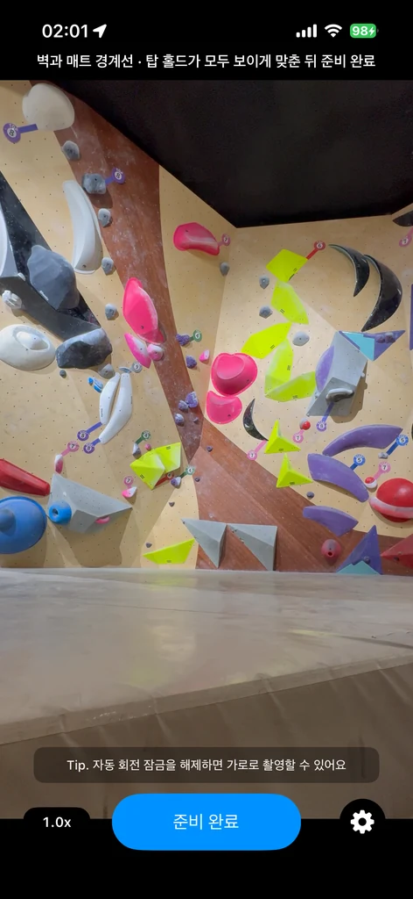

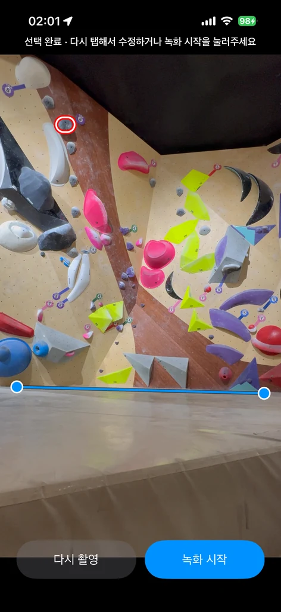
03 · PROBLEM
클라이밍 세션의 기록 과정에는
촬영과 확인을 반복하는 번거로움이 있었습니다
혼자 촬영하는 사용자는 매 시도마다 녹화를 조작하고, 긴 원본에서 등반 구간을 다시 찾은 뒤 편집과 재촬영을 반복해야 했습니다.
촬영 조작이 운동 흐름을 방해
등반 전후로 휴대폰까지 이동해야 해 세션의 리듬과 집중이 끊겼습니다.
긴 원본에서 유효 구간을 수동 탐색
대기와 이동 장면이 포함된 영상에서 각 시도의 시작과 종료를 직접 찾아야 했습니다.
실패 확인 후 다시 촬영하는 과정의 번거로움
실패 영상을 확인하고 원인을 파악한 뒤에도 녹화 화면으로 돌아가 구도와 촬영 조건을 다시 맞춰야 해, 다음 시도를 바로 이어가기 어려웠습니다.
04 · SOLUTION
공통 상태 정책 위에,
플랫폼별 입력 파이프라인을 최적화했습니다
iOS와 Android 모두 매트 경계를 좌표 기준으로 삼고, 직전 2fps 분석 프레임의 luma 차이로 포즈 추론 시점을 결정합니다. 이후 각 플랫폼에 맞게 입력을 구성한 뒤, 신뢰 관절과 x 위치별 매트선의 상대 좌표를 동일한 상태 정책으로 해석합니다.
01MobileSAM70·80·90·95% 프롬프트에서 매트 후보를 분할하고 유효 경계를 선택
02Platform Motion SearchAndroid는 선택된 변화 영역의 1.5배 정사각형 ROI를 만들고, iOS는 매트선 위 40% 전 너비 영역의 변화율로 Vision 실행을 트리거
03Platform Pose InputAndroid는 YUV ROI를 256×256 MoveNet 입력으로 직접 샘플링하고, iOS는 활성 촬영 영역을 최대 384px로 축소해 Vision에 전달
04Shared State Policy비얼굴 신뢰 관절과 x-보간 매트선을 이용해 대기·등반·유실 복구·종료 후 추적 상태를 전이
기존 방식TopOut
등반마다 녹화를 시작하고 종료한 세션을 연속 촬영하고 시도별 타임스탬프를 기록
대기 장면이 포함된 원본을 직접 탐색시작과 완등 후보를 자동 제안
긴 영상에서 정밀 편집이 어려움확대 타임라인과 0.1초 미세 조정 제공
05 · ITERATIONS
필드 테스트와 사용자 피드백을
파이프라인 구조와 제품 흐름에 반영했습니다
환경마다 임계값을 추가하는 방식은 예외를 늘릴 뿐이었습니다. 필드 영상에서 실패 장면을 재현해 입력 영역·모델 출력·상태 전이를 분리하고, 출시 후 사용자 피드백은 실제 사용 흐름의 다음 업데이트로 연결했습니다.
01 · MAT DETECTION
규칙 기반 경계 탐지의 한계를 확인하고,
영역 분할 기반 후보 선택으로 전환했습니다
INITIAL APPROACH
색상·밝기 차이와 하단 영역의 균일도를 이용해 경계를 추정했습니다. 그러나 큰 볼륨의 외곽선, 조명 그림자, 벽과 매트의 유사한 색상이 실제 접점보다 강한 에지로 검출돼 촬영 환경별 보정값이 계속 늘어났습니다.
FINAL DECISION
MobileSAM 임베딩을 한 번 생성한 뒤 70·80·90·95% 높이의 프롬프트를 디코딩하고, 구조적 조건을 통과한 후보 중 가장 높은 상단 경계를 선택했습니다.
- 가로 점유율 40% 이상, 최상단 위치 50% 이하, 경계 기울기 15° 이하 조건으로 후보 필터링
- 선택된 상단 경계를 x=6%와 x=94%의 편집 가능한 2점 직선으로 변환
- 후보가 없으면 선택 영상 높이 75% 기본선을 사용하고 사용자가 최종 보정
- build 9부터 실제 카메라 스트림과 3A가 안정된 Ready 이후 새 프레임만 분석해 앱 실행 직후 첫 경계의 오차를 방지
- 온디바이스 모델 호출이 지연되면 5초 후 기본 경계로 전환해 촬영 흐름이 분석 대기 상태에 갇히지 않도록 보호
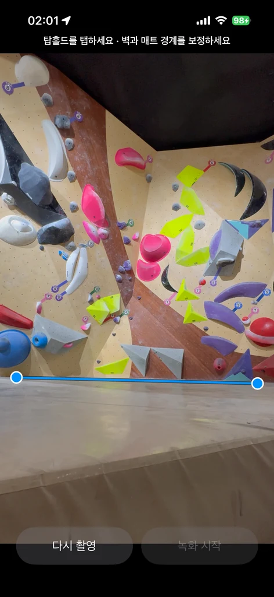
02 · START & FINISH
화면 변화는 탐색 신호로 제한하고,
등반 판단은 신체 관절 관계로 검증했습니다
INITIAL APPROACH
매트 주변 움직임을 시작, 탑홀드 주변 움직임을 종료로 해석했습니다. 필드 테스트에서는 카메라 흔들림, 지나가는 사람, 자동 노출 변화가 동일한 픽셀 변화로 나타나 실제 등반과 구분되지 않았고, 짧은 정지 동작도 종료로 오인됐습니다.
FINAL DECISION
Motion Detection은 Pose ROI를 생성하는 트리거로만 사용하고, 시작·종료는 기울어진 매트선과 신뢰 가능한 관절의 상대 위치로 판정했습니다.
- 초기 탐색은 편집된 매트선 위 최대 선택 영상 높이 40% 영역으로 제한
- 9:16·4:5·3:4·1:1의 실제 선택 영상 높이를 기준으로 두 플랫폼 시작선 6% · 종료선 4% 적용
- 어깨-골반 축이 불완전하거나 몸통 관절이 좌우 10%에 있는 부분 Pose에는 발목을 포함한 하체 관절 조건을 강화해, 중앙 동작은 유지하면서 등반 종료 후 재시작 오탐 완화
- 매트 복귀는 종료 확인에 사용하고 실제 결과 후보는 최고점 또는 탑홀드 최접근 시점으로 분리
03 · POSE RECOVERY
일시적 관절 유실을 종료로 확정하지 않고,
복구 가능한 상태로 모델링했습니다
FAILURE MODE
빠른 다이노 동작의 모션 블러, 팔과 몸통의 겹침, 홀드에 의한 관절 가림, 순간적인 화면 이탈로 포즈가 누락됐습니다. 누락을 즉시 종료로 처리하자 하나의 시도가 여러 클립으로 쪼개지고 다음 시도까지 탐색 상태가 불안정해졌습니다.
RECOVERY POLICY
활성 등반에서는 최대 6초 동안 4fps 복구 모드로 전환하고, 유효 포즈가 복귀하면 동일한 시도의 관절 기반 추적을 재개합니다.
- 안정적인 등반은 2fps, 시작 전·종료 후 추적과 유실 복구는 4fps로 동적 스케줄링
- Android는 최초 움직임 영역과 추적 관절 영역을 각각 1.5배 확장한 정사각형 ROI로 갱신하고, iOS는 활성 촬영 영역을 최대 384px로 축소해 Vision 입력으로 사용
- 정상 종료 후 유효 포즈 2회 연속 미검출 시 초기 Motion 탐색으로 복귀
04 · REVIEW TO RETAKE
실패 분석이 다음 시도를 늦추지 않도록,
리뷰와 재촬영을 하나의 상태 흐름으로 연결했습니다
CLIMBER FEEDBACK
클라이머 피드백에서 실패 영상을 재생해 발 위치와 동작 타이밍을 확인한 뒤, 다음 촬영을 위해 카메라 화면으로 돌아가 구도와 설정을 다시 맞추는 과정이 번거롭다는 점을 확인했습니다.
PRODUCT DECISION
녹화 종료 후 자동 제안 구간을 바로 검토하고, 리뷰 화면의 ‘다시 촬영’ 버튼으로 기존 앵글과 선택 상태를 유지한 채 카메라를 재바인딩하고 카운트다운을 다시 시작하도록 구현했습니다.
- Android는 매트선·탑홀드 선택과 촬영 설정을 상태에 유지하고, 리뷰 파일과 이전 감지 구간만 정리한 뒤 카메라를 재생성
- iOS는 저장하지 않은 클립 삭제를 확인한 뒤 리뷰를 닫고
onRetake콜백으로 기존 촬영 컨텍스트에 복귀 - ‘실패 확인 → 원인 파악 → 같은 앵글로 재촬영’의 이동과 재설정 단계를 하나의 버튼으로 축소
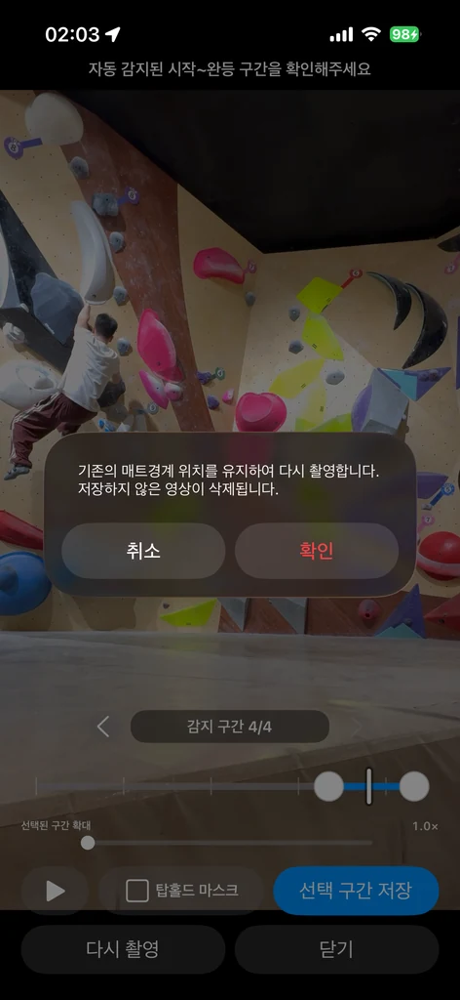
05 · FEEDBACK TO VERIFIED GALLERY
댓글로 확인한 실제 사용 요구를,
저장 완료의 신뢰를 높이는 업데이트로 연결했습니다
USER FEEDBACK
Android 출시 소식에 사용자가 “촬영본이 갤러리에 추가되는 것 같은데, 앱 안에서도 최종 저장 영상을 확인하고 싶다”는 의견을 남겼습니다. 단순한 기능 요청보다 저장 결과를 확신하고 싶은 사용 맥락으로 해석했습니다.
PRODUCT RESPONSE
내보내기 성공 메시지만 보여주던 흐름을 바꿔, 시스템 갤러리에 생성된 바로 그 항목을 다시 조회·검증하고 앱 안에서 재생하도록 iOS와 Android 모두 업데이트했습니다.
- iOS는 PhotoKit의
localIdentifier로 같은PHAsset을 다시 찾고 실제AVAsset을 요청 - Android는 MediaStore의 같은
content URI를 재조회하고 파일·메타데이터 검증 후 Media3로 재생 - 구간별 저장 상태를 분리하고, Android 저장 영상 보기에는 앞뒤 5초 이동·실시간 슬라이더 seek·가벼운 반투명 컨트롤을 적용
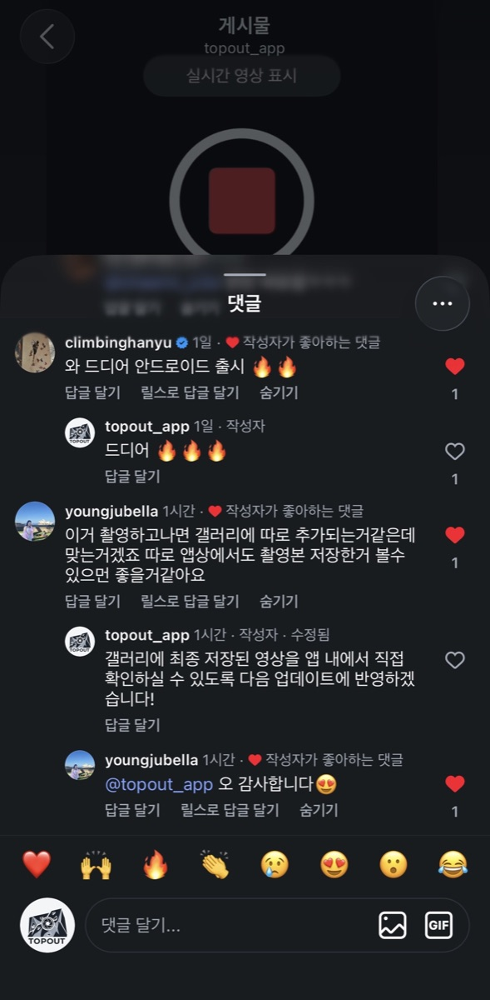
06 · LOW-MEMORY DEVICE FEEDBACK
저사양 기기의 분석 실패를 숨기지 않고,
촬영을 계속할 수 있는 복구 흐름으로 바꿨습니다
USER FEEDBACK
메모리 여유가 작은 기기에서 처음에는 매트 경계를 찾았지만 이후 분석이 끝나지 않아 수동 설정이 필요하다는 피드백을 받았습니다. 이를 단순한 인식률 문제가 아니라, 온디바이스 모델이 응답하지 않을 때 사용 흐름 전체가 멈추는 복구 문제로 다시 정의했습니다.
PRODUCT RESPONSE
iOS와 Android 모두 매트 분석에 5초 제한을 두고, 시간 안에 결과를 받지 못하면 화면 높이 75%의 기본 경계로 복구하도록 변경했습니다. 이후 사용자가 벽과 매트 경계를 직접 보정해 모델 상태와 관계없이 촬영을 이어갈 수 있습니다.
- 타임아웃 이후 늦게 도착한 분석 결과는 무시해 사용자가 보정한 경계를 다시 덮어쓰지 않도록 보호
- 카메라 진입과 모델 준비 시점을 분리해 메모리 사용이 집중되는 시작 구간의 부담을 완화
- 분석이 끝난 중간 버퍼와 모델 참조를 화면 상태에 맞춰 정리하고, 장시간 고화질 녹화의 프레임 적체를 제한
- 실제 사용자 피드백을 오류 메시지 추가가 아니라 실패 후에도 완료 가능한 흐름으로 반영
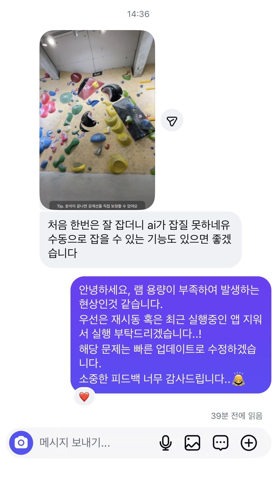
06 · MODEL BENCHMARK
벤치마크 정확도보다,
지속 촬영 환경의 총비용을 기준으로 선택했습니다
Android에서는 여러 포즈 모델을 홀드 오탐, 모션 블러, 추론 지연, 발열·전력, 앱 크기와 배포 조건까지 비교해 MoveNet Thunder FP16을 선택했습니다. iOS에서는 별도 모델을 번들링하는 대신 Apple Vision의 인체 자세 관찰 결과를 활용하고, 동일한 상태 정책에 맞춰 입력 크기와 관절 필터링을 조정했습니다.
ModelStrengthIssueDecision
ML Kit Pose낮은 통합 비용클라이밍 홀드를 관절로 인식하는 오탐제외
Tiny-PP Pose낮은 연산량가림과 작은 관절에서 키포인트 안정성 부족제외
Tiny-PP + RTM경량·고정밀 결합 실험파이프라인 복잡도 대비 유의미한 개선 부족제외
MoveNet Lightning높은 처리량다이노와 모션 블러에서 포즈 유실 증가제외
YOLO11 Pose가장 안정적인 검출지속 추론 전력과 배포 라이선스 리스크제외
RTM / RTMO다양한 자세 표현홀드 오탐·블러·후처리 비용제외
MoveNet Thunder FP16정확도·전력·배포성의 균형Lightning 대비 높은 연산량을 ROI로 보완채택
PRODUCT EVOLUTIONiOS 카메라·선택 프로토타입Motion → Pose 단계형 분석Android 모델·런타임 검증출시 후 피드백 기반 안정화
Vision + Motion-guided Person Tracking
활성 촬영 영역을 긴 변 최대 384px로 축소해 Vision을 한 번 실행하고, 여러 사람이 잡히면 160px 밝기 변화 격자와 가장 잘 맞는 한 명만 선택합니다. 이후에는 직전 관절 위치와의 연속성으로 같은 등반자를 유지합니다.
- 매트선 위 40% 영역을 8열 격자로 나눠 초기 등반자 위치 선택
- 주변 인물의 관절을 시작·종료·완등 판단에서 분리
- 추가 Vision 추론 없이 선택 영상 높이 기준 시작선 6% · 종료선 4% · 유실 복구 4fps 유지
MoveNet Thunder + Motion-seeded ROI
CameraX YUV 프레임에서 필요한 정사각형 ROI만 256×256 RGB 텐서로 직접 샘플링해 전체 화면 변환 비용을 제거했습니다.
- LiteRT FP16 · XNNPACK
- 어깨·골반·팔꿈치·무릎 4개 그룹 중 3개 이상 신뢰 관절 검증
- 선택 영상 높이 기준 시작선 6% · 종료선 4%
CROSS-PLATFORM POLICY초기 탐색·안정 등반 2fps시작 전·종료 후·복구 4fps포즈 유실 허용 6초리뷰 여백 앞뒤 3초
ANDROID CAMERA UX논리 멀티카메라 연속 줌혼합형 외부 망원 경로 유지핀치를 따르는 정지 프레임 전환전환 ID 기반 복구 상태 머신
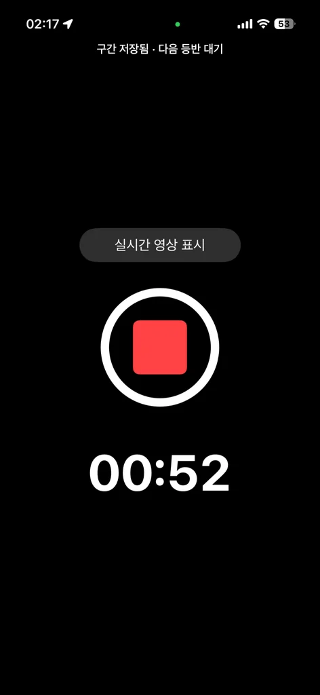
07 · RECORDING PERFORMANCE
분석 예산은 유지하고,
필수적이지 않은 렌더링 비용을 줄였습니다
TopOut은 녹화·인코딩과 동시에 포즈 추론을 지속해야 합니다. 기본 설정에서는 실시간 프리뷰 스트림을 중단하고 촬영 시간만 표시해 GPU 렌더링 부담을 줄였으며, 클라이머 피드백을 반영해 앵글 확인이 필요한 환경에서는 프리뷰를 다시 켤 수 있도록 했습니다.
DEFAULT MODEPreview Suspended녹화·분석은 유지, 화면 렌더링만 중단
USER OPTIONLive Preview앵글 확인이 필요한 촬영 환경 지원
08 · REVIEW EXPERIENCE
자동 감지의 한계를 숨기지 않고,
검토 비용을 최소화하는 편집 UX로 보완했습니다
편집 결과뿐 아니라 시스템 갤러리에 생성된 실제 저장본까지 앱 안에서 다시 열어, 내보내기와 최종 전달 사이의 불확실성도 줄였습니다.

VELOCITY-SENSITIVE TRIM
드래그 속도에 따라 0.1초 정밀 모드로 전환
직접 촬영 영상을 편집하면서 종료점을 움직인 뒤 재생 위치가 구간의 마지막으로 이동해, 끝점이 의도대로 조정됐는지 확인하기 불편하다는 점을 발견했습니다. 빠르게 움직일 때는 넓은 범위를 탐색하고 천천히 조작하면 0.1초 단위로 미세 조정하며, 손을 떼면 시작점은 해당 위치부터, 종료점은 3초 전부터 자동 재생해 수정 전후의 맥락을 바로 확인하도록 개선했습니다.
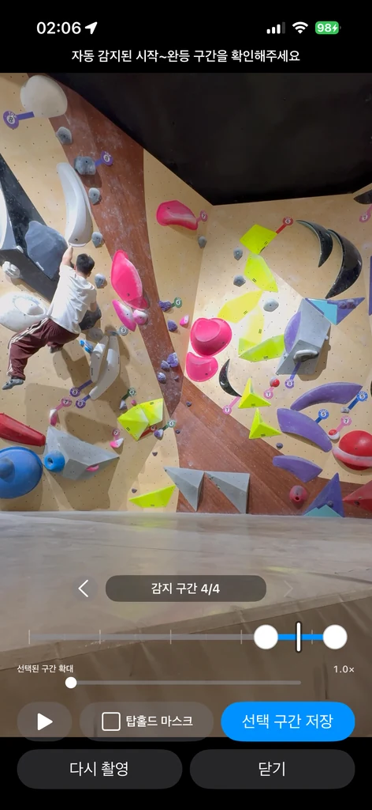
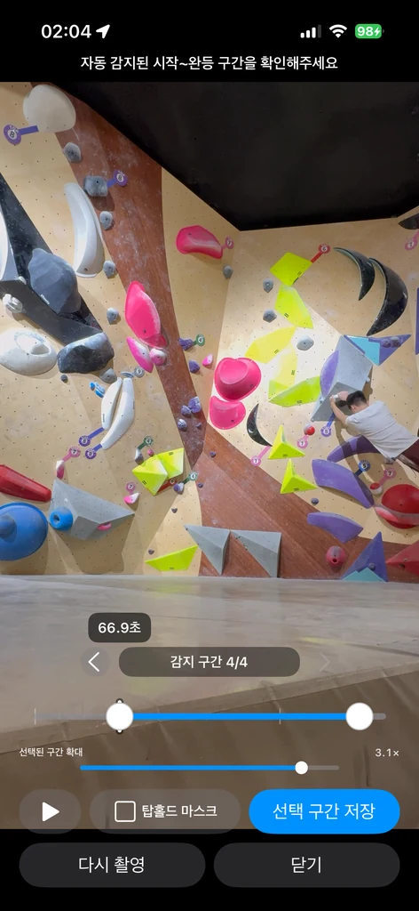
CONTEXTUAL TIMELINE ZOOM
긴 세션에서도 선택 구간의 조작 면적을 확보
10분 이상의 원본에서 수초 길이의 등반 구간이 지나치게 작아지는 문제를 해결하기 위해 전체 타임라인과 확대 타임라인을 분리했습니다. 작은 배율 손잡이를 정확히 누르지 않아도 트랙의 원하는 위치를 탭하거나 진동 없이 곧바로 드래그할 수 있도록 iOS와 Android의 입력 범위도 통일했습니다.
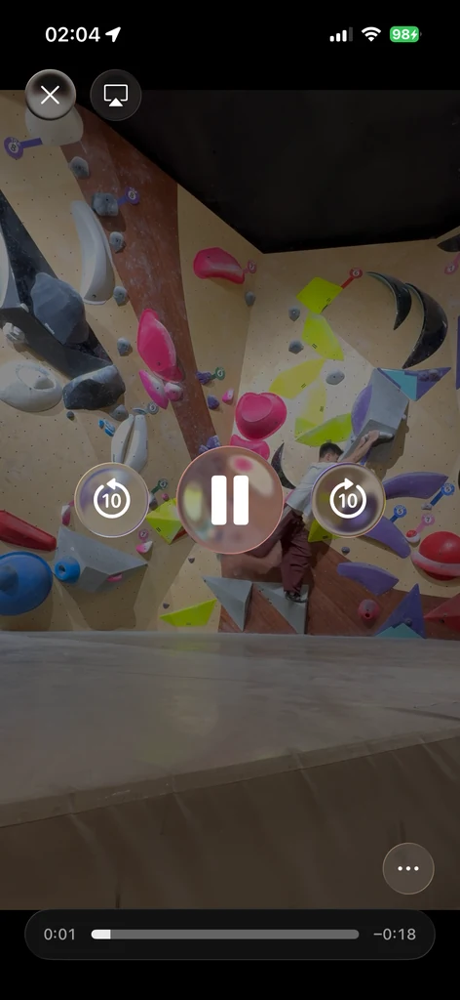
VERIFIED GALLERY PLAYBACK
피드백을 반영한 앱 내 저장 영상 확인
저장이 끝났다는 메시지만으로는 실제 결과를 확신하기 어렵다는 사용자 의견을 반영했습니다. 시스템 갤러리에 생성된 바로 그 영상을 다시 조회해 앱 안에서 재생하고, 탐색 바와 앞뒤 이동으로 필요한 장면을 곧바로 확인할 수 있도록 저장 이후의 흐름까지 연결했습니다.
09 · PRIVACY & RELEASE
모델 구현뿐 아니라,
데이터 처리와 배포 운영까지 제품 범위로 관리했습니다
01
On-device Processing & Data Minimization
영상 프레임, 신체 관절 좌표와 중간 분석 결과를 외부 서버로 전송하지 않고 기기 내에서 처리합니다.
02
Recording Resilience
백그라운드 전환, 카메라 중단, 저장공간 부족과 같은 예외에서 현재 파일을 먼저 정상 종료하도록 설계했습니다. build 10에서는 시스템 뒤로가기·플레이어 생명주기·오디오 인터럽션·안전 영역 대응을 보강했습니다. build 11에서는 두 플랫폼 모두 AI 모델 준비를 카메라 진입 이후로 분리했고, build 12에서는 분석 대기를 5초로 제한해 메모리 제약 기기에서도 수동 보정으로 복구할 수 있도록 했습니다. build 13에서는 시작 판정 정렬과 iOS 다중 인물 추적을 보강했습니다. build 14에서는 선택 영상 높이를 기준으로 시작·종료선을 6%·4%로 맞췄습니다. v1.7 build 15에서는 화면 이탈로 몸통·하체가 잘린 Pose의 시작 조건을 강화하고, 취소나 앱 전환 뒤 도착한 오래된 카메라·분석 콜백이 다음 상태를 바꾸지 못하도록 요청 수명을 정리했습니다.
03
Verified Gallery Delivery
iOS PhotoKit과 Android MediaStore에 저장된 실제 항목을 재조회하고 다시 재생합니다. 저장 구간은 첫 영상 프레임부터 디코딩 가능하도록 내보내 export 성공과 사용자가 확인하는 최종 영상 사이의 불확실성을 줄였습니다.
04
Localization & Release Operations
해외 클라이머가 별도 설정 없이 시작할 수 있도록 OS 언어 자동 선택을 기본값으로 두고, 영어·한국어·일본어·중국어 간체·번체·프랑스어·독일어·스페인어·포르투갈어의 기능 문구·오류·권한 안내를 현지화했습니다. 언어 선택 즉시 설정 화면을 미리보기하고, 긴 버튼 번역은 두 줄 정렬과 자동 축소로, Android 촬영 Tip은 한 줄 자동 축소로, 상단 상태 문구는 최대 두 줄로 읽을 수 있게 유지했습니다. iOS 가로모드 결과 화면은 노치 안전 영역까지 반영했습니다. 저장한 언어 선택은 기기 내부에만 남습니다. iOS Archive, Android AAB, 서명 키, 배포 테스트, Privacy Manifest, 개인정보 처리방침과 오픈소스 고지도 함께 관리했습니다.
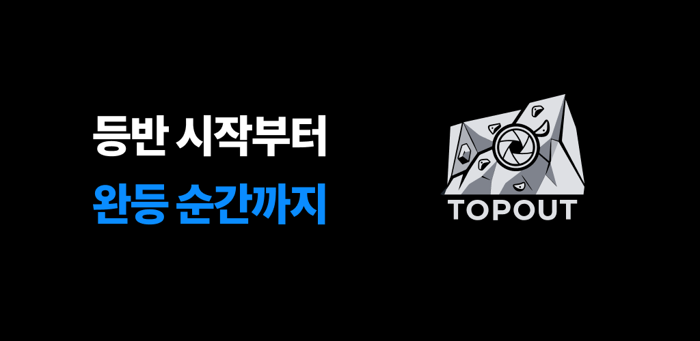
TOP OUT · KEEP CLIMBING
등반을 판별하는 알고리즘을 넘어,
촬영·검토·재시도의 마찰을 줄인 제품
TopOut을 통해 문제 정의, 컴퓨터 비전 파이프라인 설계, 크로스플랫폼 구현, 성능 최적화, 필드 테스트와 배포 운영을 하나의 제품 의사결정 과정으로 연결했습니다.